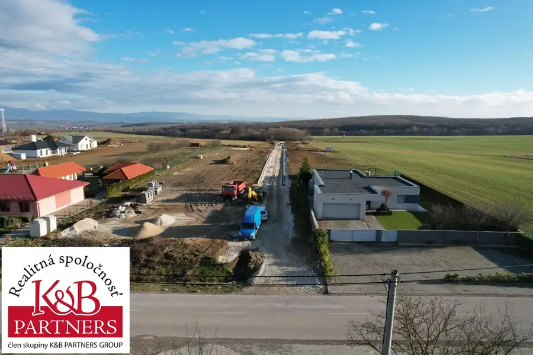
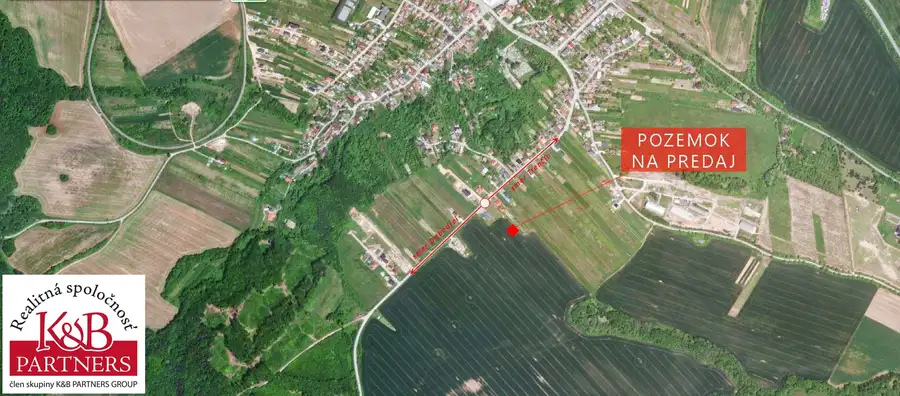
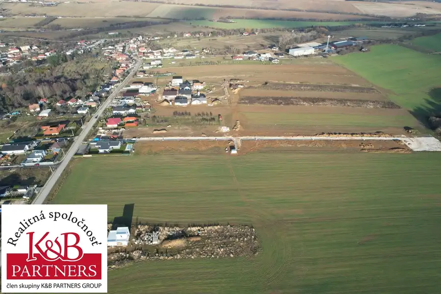
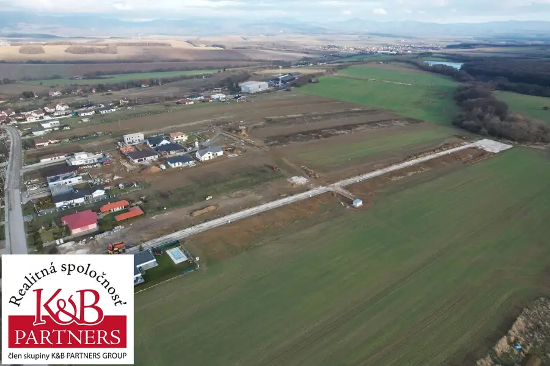
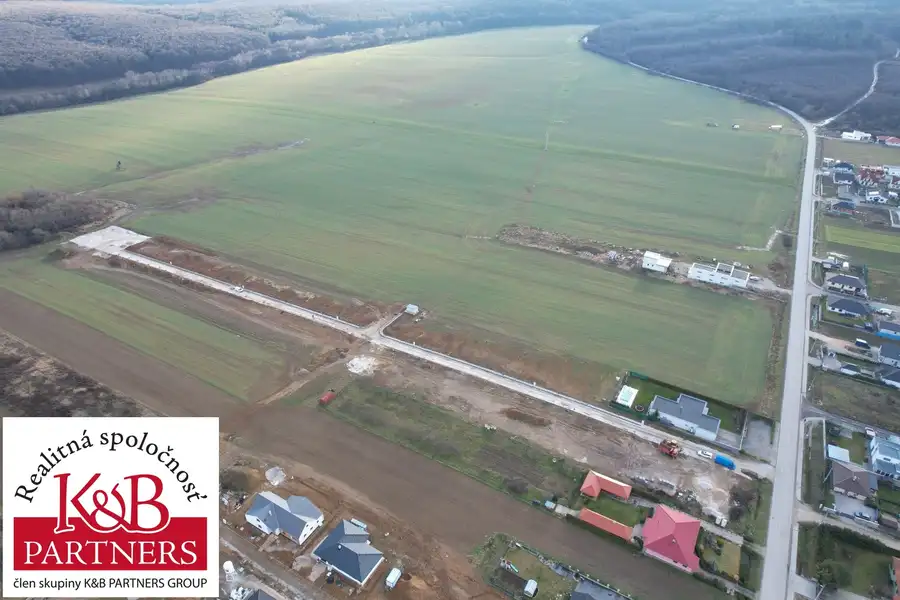
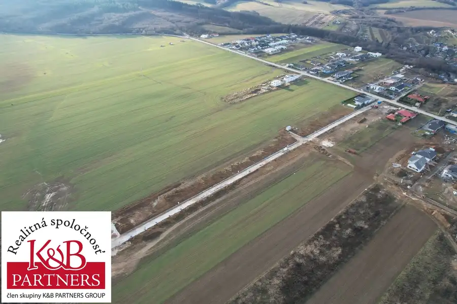
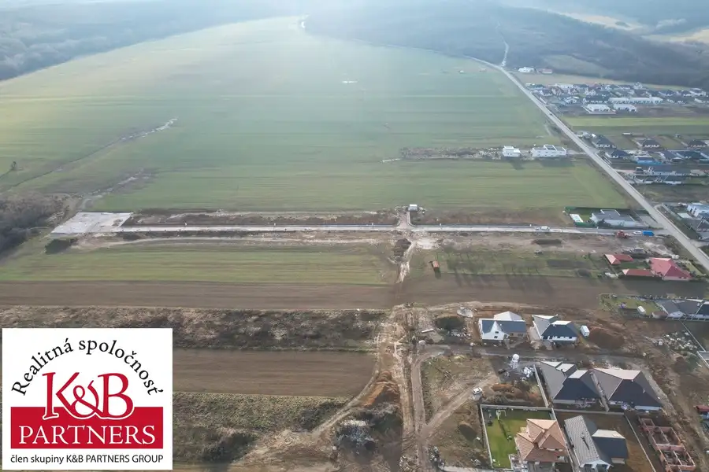
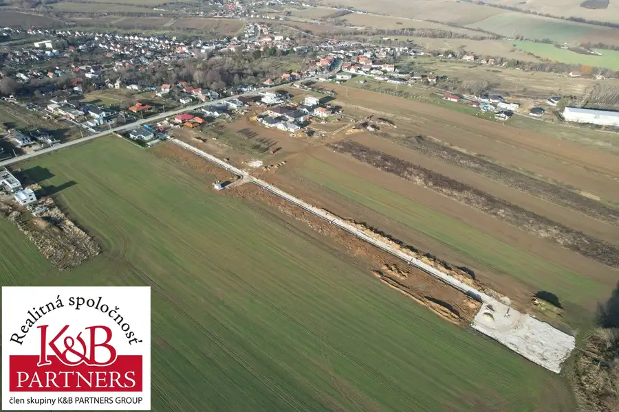

Predaj · Pozemok
Ponúkame Vám na predaj nové pozemky v Trenčianskom Jastrabí o rozlohe od 400 m2.
Trenčianske Jastrabie
Cena na vyžádání








- Plocha400 m²
- VlastníctvoOsobné
O nehnuteľnosti
Ponúkame Vám na predaj nové stavebné pozemky v obci Trenčianske Jastrabie.Pozemky o rozlohe 400 sa budú nachádzať v obľúbenej časti v smere na Dubodiel.Viac info Vám poskytne - Tomáš Krúpa - emailom: krupa@kbpartners.sk alebo telefonicky 0918 582 940.
Parametre
- Druh
- Pozemok pre rodinné domy
- Dátum zverejnenia
- 29. 03. 2023
- Elektrina
- Na pozemku - 230 V
- Odpadové vody
- Nedostupné
- Plocha pozemku
- 400 m²
- Plyn
- Nedostupné
- Pripravenosť k výstavbe
- Schválené v územnom pláne
- Terén pozemku
- Rovinatý
- Typ
- Predaj
- Vlastníctvo
- Osobné
- Voda
- Na pozemku - Diaľkový vodovod
Kde to je


Ďalšie ponuky
Celá ponuka